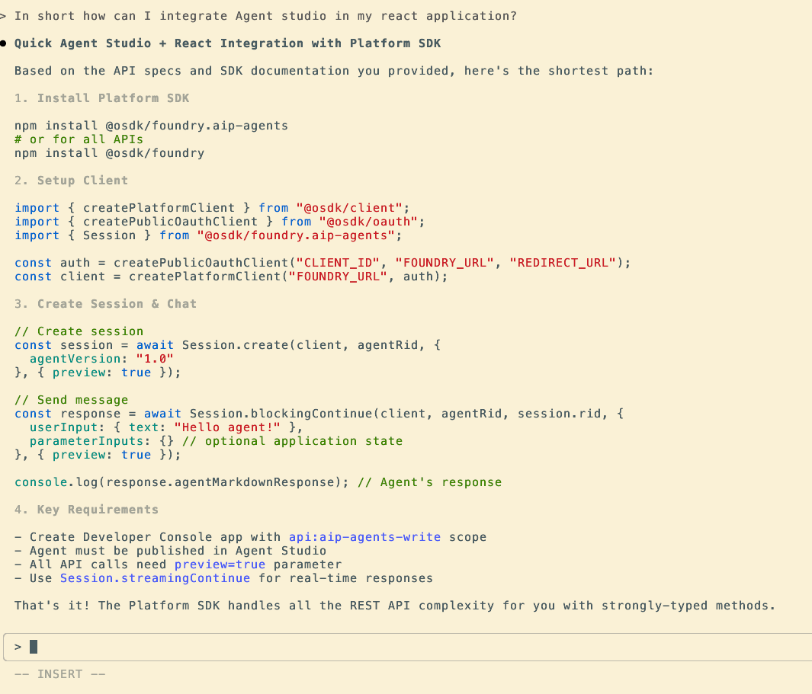
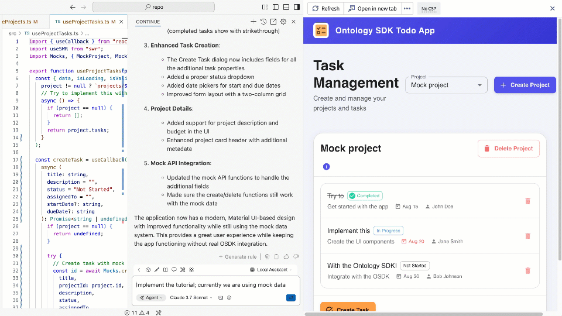
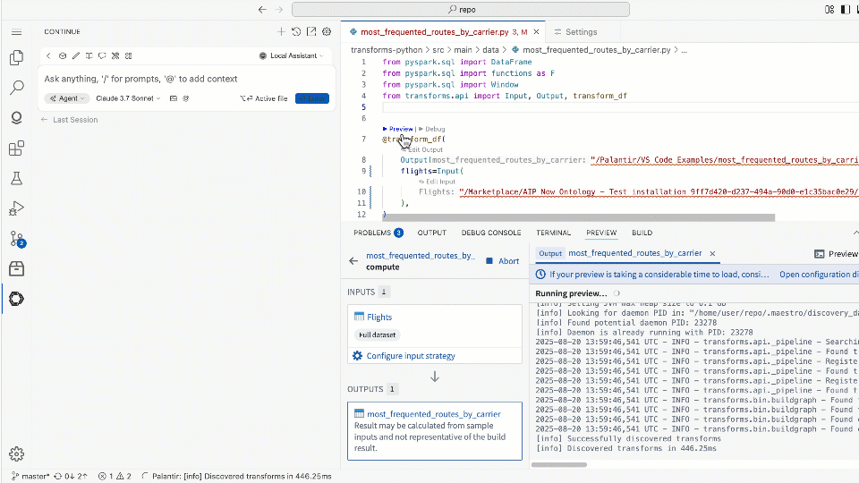

Palantir MCP is an implementation of the Model Context Protocol â. Palantir MCP enables AI IDEs and AI agents to autonomously design, build, edit, and review end-to-end applications within the Palantir platform, covering everything from data integration to ontology configuration and application development. In addition, you can use Palantir MCP to allow external AI systems to query documentation, metadata, and data, as well as perform high-level tasks on the platform. Developers can use Palantir MCP to automate auxiliary tasks while they stay focused on the system they are building.
Review our installation guidance and other resources before getting started with Palantir MCP:
The Palantir MCP provides two main benefits to developers:
Palantir MCP is designed for ontology builders and can modify ontology types, but cannot write ontology data. By contrast, Ontology MCP (OMCP) enables ontology consumers to safely read and write data to your ontology through external AI agents. Ontology MCP exposes your application's object types, action types, and query functions as MCP tools. These MCP tools can be used by external systems like Copilot Studio or Gemini Enterprise to execute actions and write data, while restricting which actions the agent can take through application restrictions. Learn more about enabling Ontology MCP in the Developer Console documentation.
LLM agents are powerful for writing code to integrate with new systems and libraries given the appropriate code context is provided. The Palantir MCP will provide the LLM with specific examples when necessary. The MCP recognizes your current repository and injects tailored context for the repository type (for example, OSDK repositories, Python transforms, and Typescript functions). Additionally, the MCP searches Palantir's code snippet index and provides context for libraries that do not fit a specific repository.
The screenshot below shows how Claude Code Agent can provide context on how to integrate with AIP Chatbot Studio (formerly known as AIP Agent Studio).

The Palantir MCP provides tools to take actions in Foundry. Specifically, the MCP can search your ontology, safely modify the ontology, and update your Developer Console application. For example, you can ask it to Find me the object/links/functions to {do something}, Create this object-type/link-type and integrate it with my application, or Apply this proposal to my Developer Console application.
The animation below shows the VS Code Continue agent implementing the OSDK tutorial application using context provided by Palantir MCP.

For more information on OSDK, see the OSDK React application documentation.
The MCP provides tools to run Python transforms. These tools allow agents to fix transforms iteratively. The agent runs the tool preview_transform and, on failure, attempts to fix errors and re-run until preview_transform succeeds.
The animation below shows how VS Code Continue Agent can preview a transform, fix issues, then re-run preview to confirm the results.
